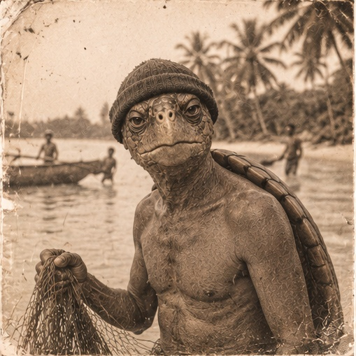
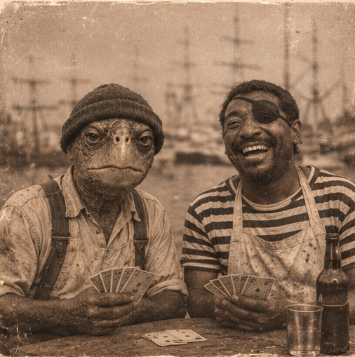
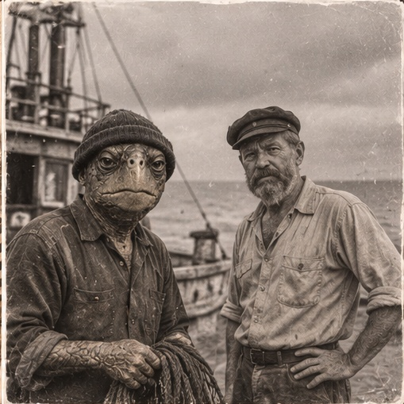
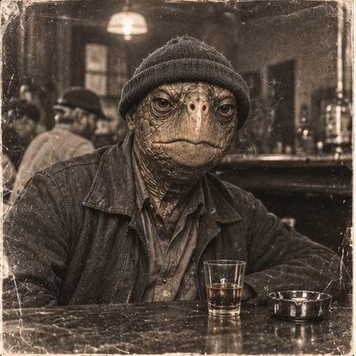
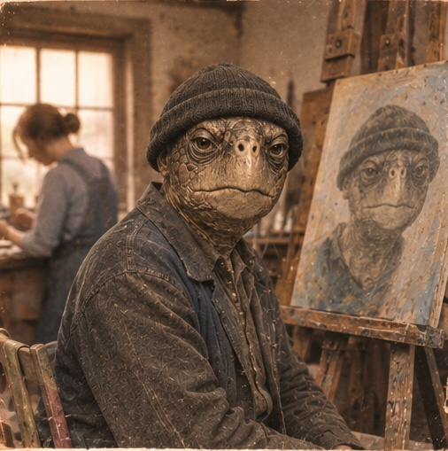
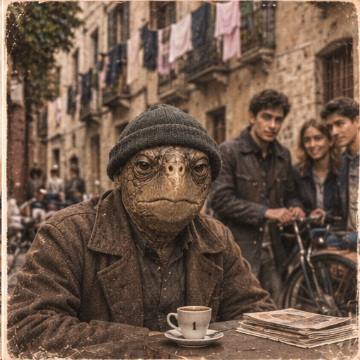

Welcome.
Come in, and take your time. This is a place set aside for slow thinking, and for even slower speaking. Pull up a chair, stay as long as you like, and say something only when it’s worth the wait.

Remaining Essays
-
A diner keeps a coffee cup on a hook for a regular who left town under a cloud. On rumor, loyalty, and the difference between keeping faith and keeping quiet.
-
Adobe walls do not fall all at once; they are undone by years of small, ignored seepage. The same is true of the towns we live in.
-
A desk sergeant keeps one book for every soul brought through his door. In that small habit lies the whole of what a just community asks of itself.
-
A boy cries wolf, the town stops listening, and the flock is lost. The old fable carries a sharper warning for any free people: what happens when a town lets a proven liar keep watch.
-
Every free people has its liars. The real danger is the day we stop being shocked by them.
From the Album





